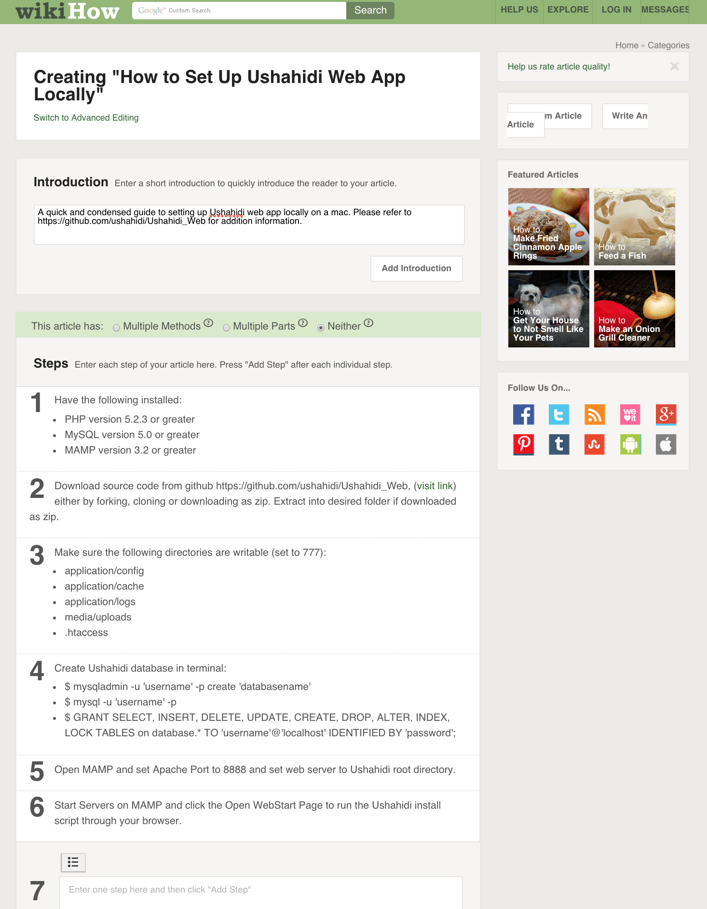
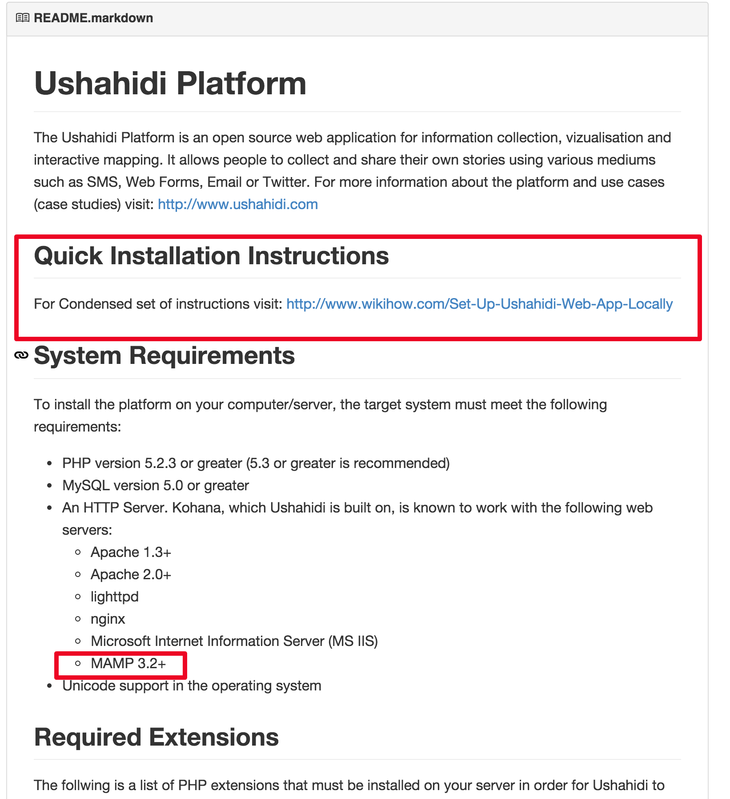

Created wiki page for a quick install guide for Ushahidi using MAMP on Mac OSX. Still awaiting WikiHow for approval. Here is a screen shot:

April 8, 2015
Adding to the read me file and suggesting the use of MAMP and a section for quick installation guide.

April 6, 2015
Here's the link to the screen cast demonstrating MAMP to host Usihidi.
https://youtu.be/y2He54lt4yQ
April 6, 2015
For the past couple days, I have been looking into the Usahidi Project. I believe they would really benefit by suggesting to their developers that MAMP would be a good tool to use for local hosting. I plan on making a screen cast on how to set it up, add MAMP to the read me and post any replies or emails that I may get from the developers on the Usihidi project.
April 4, 2015